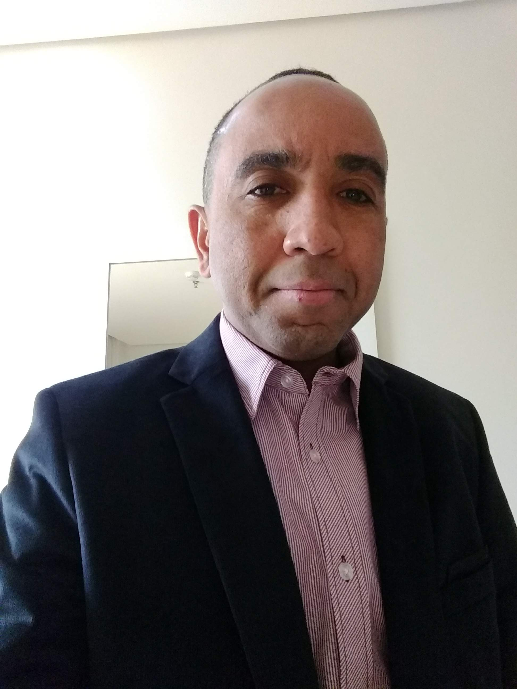

Formação voltada ao mercado
Práticas, projetos e conteúdos alinhados à rotina de tradutores, intérpretes e revisores.
Desenvolva domínio técnico da linguagem, da tradução e das ferramentas que fazem parte do mercado profissional.
Na graduação da Faculdade Phorte, você estuda ao vivo com mestres e doutores de referência, ganha acesso gratuito a softwares de tradução profissional e constrói portfólio, incluindo oportunidades em projetos com a OMS.
Tudo isso em um bacharelado dinâmico de 6 semestres pensado para a sua empregabilidade

A Graduação em Tradução e Interpretação Português / Inglês da Faculdade Phorte prepara você para assumir o papel de estrategista cultural e linguístico em um mercado globalizado.
Da tradução técnica e jurídica à interpretação oral de alto impacto, o curso desenvolve competências avançadas para análise de contextos globais, rigor terminológico, tomada de decisões tradutórias e adaptação de conteúdos para mídias, editoras e plataformas digitais diversas.
Ao longo da formação, você aprofunda conhecimentos essenciais como:

Na Phorte, o modelo online ao vivo foi pensado para quem precisa de flexibilidade, mas também valoriza contato com professores, troca com a turma e rotina acadêmica.
As aulas acontecem em tempo real e podem ser acompanhadas com interação durante os encontros. Quando não houver obrigatoriedade de presença, o estudante pode acessar as gravações e organizar os estudos conforme sua rotina.
2º, 3º, 4º e 6º semestres: presença obrigatória apenas na disciplina de Interpretação, com carga de 1 hora semanal.
5º semestre: presença obrigatória em todas as disciplinas.
Avaliações: provas presenciais obrigatórias realizadas uma vez por semestre, em final de semana, na sede da Faculdade Phorte, em São Paulo.
Traduzir vai muito além de transpor termos de um idioma para outro; é decodificar contextos, intenções, referências culturais e estratégias de comunicação.
Na interpretação, esse desafio se manifesta em tempo real, exigindo do profissional escuta ativa, repertório, agilidade cognitiva e profundo domínio das línguas envolvidas.
É por isso que a nossa formação aprofunda a sua leitura crítica, a escrita técnica, a pesquisa terminológica e o uso das tecnologias que hoje ditam o ritmo do mercado global.
Esqueça a teoria distante da realidade: aqui, a sua imersão na rotina profissional acontece desde cedo por meio de projetos, estágio supervisionado e parcerias estratégicas.
Ao longo da graduação, você ganha acesso prático a ferramentas essenciais para o mercado profissional, como o SDL Trados Studio e o Wordfast, desenvolvendo familiaridade com memórias de tradução, glossários, organização terminológica e fluxos de trabalho utilizados em projetos profissionais.
A formação também aproxima os estudantes de projetos de tradução. Em uma iniciativa com a Organização Mundial da Saúde (OMS), alunos da Graduação em Tradução e Interpretação da Faculdade Phorte traduziram e revisaram voluntariamente um curso de inglês para português, com supervisão do corpo docente. A experiência envolveu tradução, revisão, terminologia, supervisão e controle de qualidade.
Outro destaque é a participação dos estudantes em projetos editoriais, com tradução de contos de grandes autores, acompanhamento dos professores e possibilidade de publicação dos trabalhos. Um exemplo é o livro Sherlock Holmes - Mistérios Sombrios, de Arthur Conan Doyle, experiência que contribui para a construção de portfólio e currículo antes mesmo da conclusão da graduação.
Além disso, os alunos também têm a oportunidade de atuar como intérpretes em eventos ao vivo, vivenciando situações profissionais que exigem preparo, escuta, agilidade e tomada de decisão linguística. Entre as experiências citadas pela coordenação estão participações em eventos como ABRATES 2026, BLISS, EAGx São Paulo e TraduShow 2026.
Práticas, projetos e conteúdos alinhados à rotina de tradutores, intérpretes e revisores.
Aulas em tempo real, orientação durante a formação e troca com profissionais experientes.
Contato com ferramentas, glossários, memórias de tradução e processos digitais da área.
Tradução de contos de grandes autores, com acompanhamento docente e possibilidade de publicação dos trabalhos.
Atuação de estudantes como intérpretes em eventos reais, aproximando a formação da prática profissional.
Professores com experiência em tradução editorial, audiovisual, técnica, jurídica, financeira, interpretação, revisão, localização e ensino.
A formação em Tradução e Interpretação permite trabalhar com diferentes demandas de linguagem, comunicação e adaptação de conteúdos.
Livros, obras de ficção e não ficção, preparação e revisão textual.
Legendagem, dublagem, filmes, séries, mostras, festivais e conteúdos digitais.
Textos especializados, materiais acadêmicos, documentos técnicos e conteúdos de áreas específicas.
Contratos, relatórios, demonstrações financeiras, documentos corporativos e textos especializados.
Reuniões, eventos, conferências e situações de mediação linguística.
Revisão textual, controle de qualidade e aprimoramento de traduções automáticas.
Adaptação de softwares, sites, jogos, plataformas digitais e materiais para diferentes públicos e mercados.
Esta graduação é indicada para quem deseja transformar o interesse por idiomas, leitura, escrita e cultura em uma carreira profissional.
A circulação global de dados, a expansão de mercados digitais e a demanda por projetos multilíngues colocaram a tradução e a interpretação no centro da estratégia de grandes empresas.
Na Faculdade Phorte, estruturamos uma formação voltada para a prática real, preparando você para atuar com domínio técnico e visão de mercado em tradução, revisão, localização e interpretação.
Confira o depoimento do nosso coordenador sobre os diferenciais do curso:
A matriz curricular do Bacharelado em Tradução e Interpretação Português / Inglês contempla língua portuguesa, língua inglesa, estudos da tradução, interpretação, tecnologias, práticas tradutórias, tradução especializada, estágio supervisionado, TCC e atividades complementares.
Itinerários de Tradução Especializada — escolher 2:
Os estudantes de Tradução e Interpretação Português / Inglês aprendem com docentes que atuam em diferentes áreas da linguagem, contribuindo com experiência acadêmica, prática profissional e vivência no mercado.
Conheça nossos docentes:

Mestre em Linguística Aplicada, especialista em revisão de textos e graduado em Letras Português/Inglês. Atua como tradutor, revisor e professor em cursos de Letras e Tradução.

Doutorando em Linguística Aplicada, mestre em Linguística Teórica e graduado em Letras Português/Inglês. Atua nas áreas de língua inglesa, tradução, tradução audiovisual e literaturas em língua inglesa.

Especialista em Tradução de Espanhol. Trabalha com roteiros para dublagem, séries, filmes, realities e novelas, além de adaptação, revisão e treinamento de tradutores.

Mestre em Ciências Contábeis, especialista em Tradução Inglês/Português e MBA em Gestão Financeira. Atua com tradução sênior na área de auditoria, demonstrações financeiras e tributos.

Tradutora editorial, preparadora, revisora e MBA em Book Publishing. Tem experiência em livros de ficção, não ficção, clássicos, obras juvenis e infantis.

Mestra em Educação, pós-graduada em Tradução e Interpretação de Conferências. Atua como tradutora, intérprete e professora de língua inglesa.

Doutora e mestra em Linguística Aplicada e Estudos da Linguagem. Pesquisa Linguística de Corpus, Análise Multidimensional e Estudos da Tradução.

Mestra em Linguística Aplicada e Estudos da Linguagem (PUC-SP), graduada em Letras — Tradutor e Intérprete (Inglês/Português) pela Unibero e estudante do Técnico Profissionalizante em Teatro na Escola Superior de Artes Célia Helena. Tradutora literária e revisora, trabalha para as editoras Skeelo, Nversos, Maquinaria Editorial, Bazar do Tempo, Gente, Globo Livros, entre outras. Fundou a Amanda Moura Editorial, escola que promove cursos e oficinas para profissionais do texto e do audiovisual.

Mestre em Estudos da Linguagem na área de Tradução, especialista em Literatura Inglesa e graduada em Letras e Direito. Atua como professora e advogada.

Especialista em Produção Executiva em Cinema e TV e em Técnicas para Legendagem de Filmes. Atua com tradução e legendagem de mostras e festivais internacionais de cinema.

Mestra em Estudos da Tradução, pós-graduada em Gestão Empresarial e Tradução de Inglês. Atua com tradução, revisão, pós-edição, CAT Tools, glossários e gestão de projetos.

Mestra em Linguística Aplicada e TESOL, com especialização em Educação Transformadora. Atua como professora, treinadora de professores, revisora e tradutora.

Mestre e doutor em História Social e mestre em Estudos da Linguagem. Atua com tecnologia, localização, trabalhos acadêmicos e conteúdos para organizações nacionais e internacionais.

Tradutora e intérprete especializada na área da saúde, com mestrado e doutorado em áreas relacionadas. Atua com tradução, dicionários, inglês para fins específicos e tradução baseada em corpus.

Mestra em Estudos da Linguagem e em Editoração Global em Espanhol, graduada em Tradução e Interpretação. Atua com tradução, revisão e coordenação de dicionários bilíngues.

Intérprete profissional e tradutor literário. Atua com interpretação e tradução de importantes autores da literatura brasileira.
Conheça experiências de quem escolheu a Faculdade Phorte para construir sua trajetória na tradução, na interpretação e no mercado de idiomas.

A qualidade é incrível e a flexibilidade ajuda a conciliar.

As aulas ao vivo à noite são muito boas para mim.

Encontrei o que queria para a profissão de tradutor e intérprete.

Os professores de tradução são sensacionais.